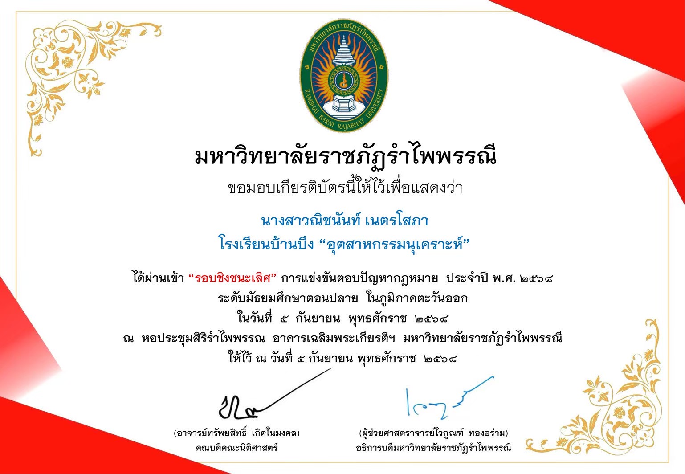
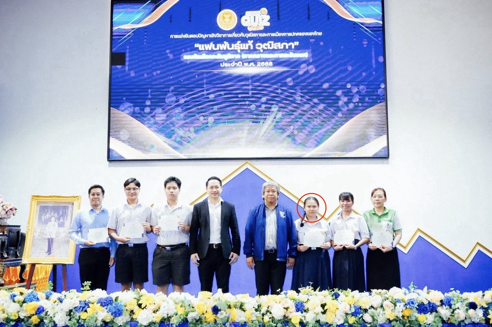
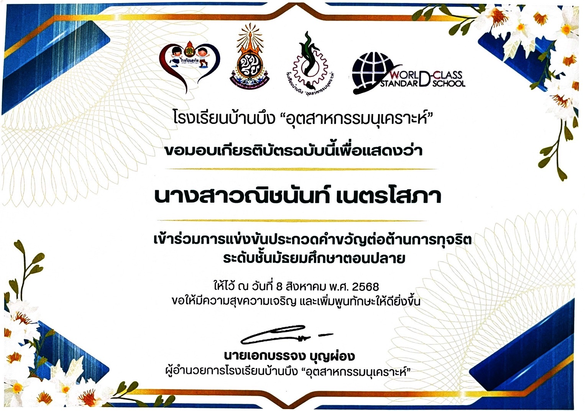
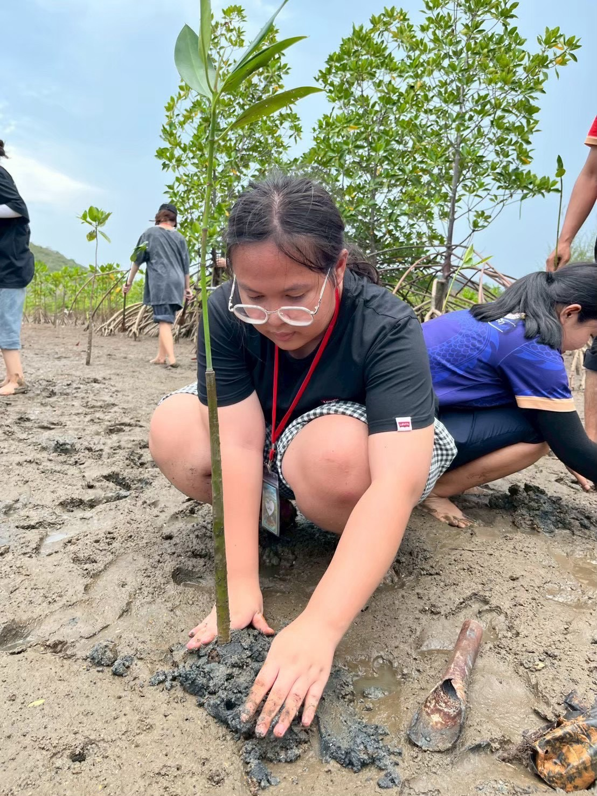
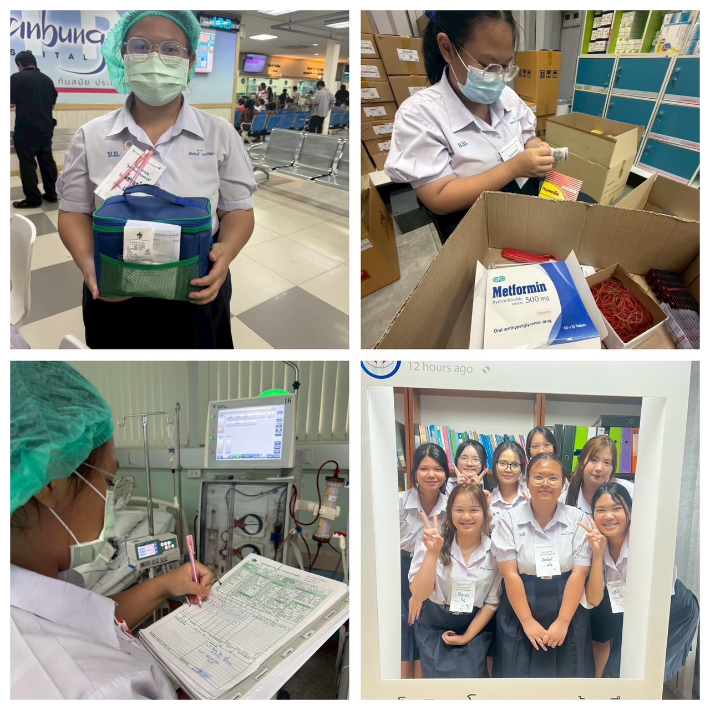
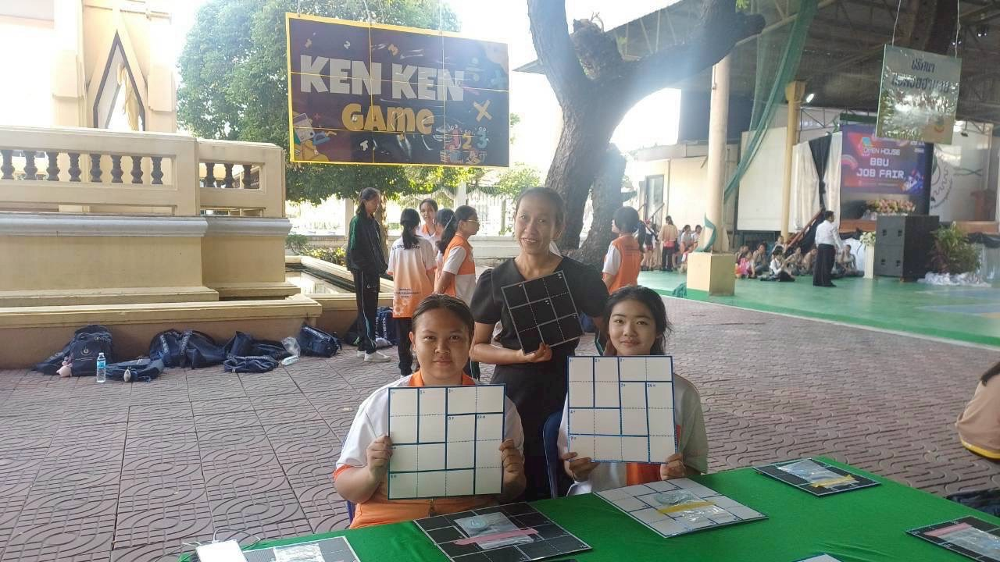
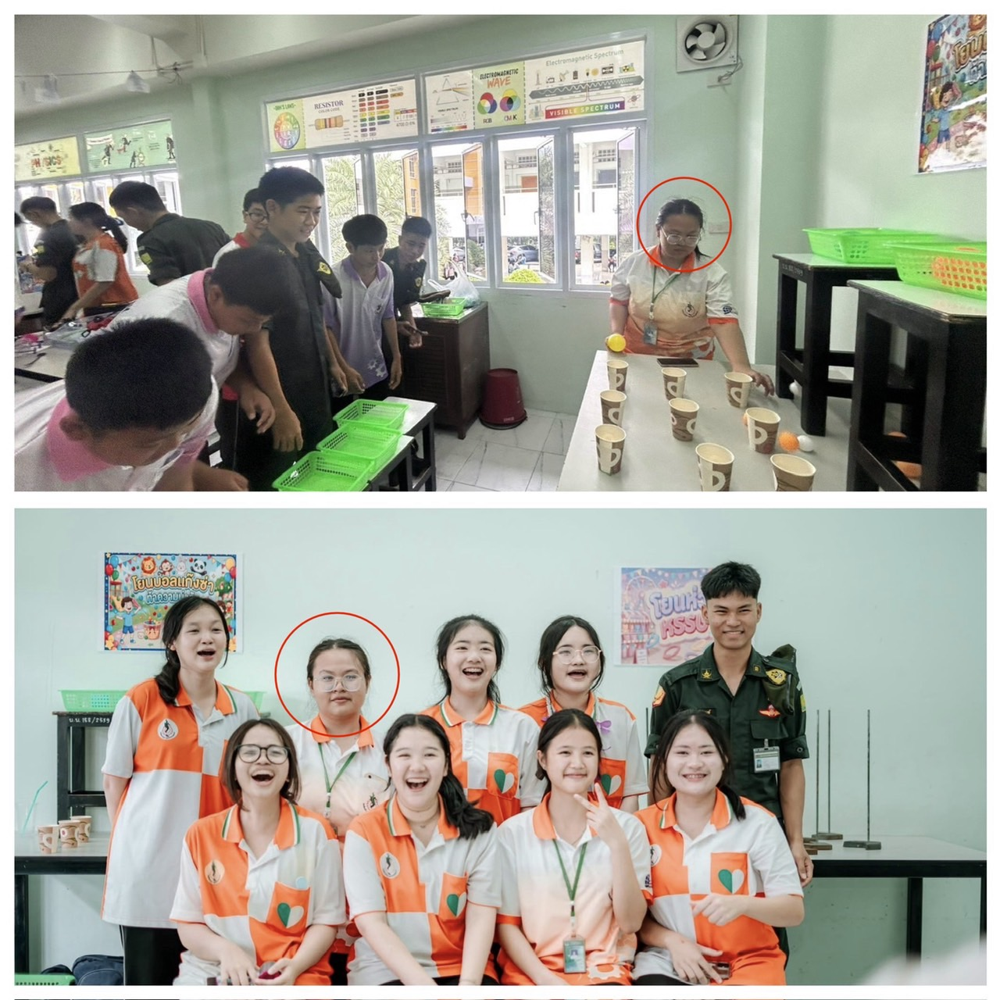
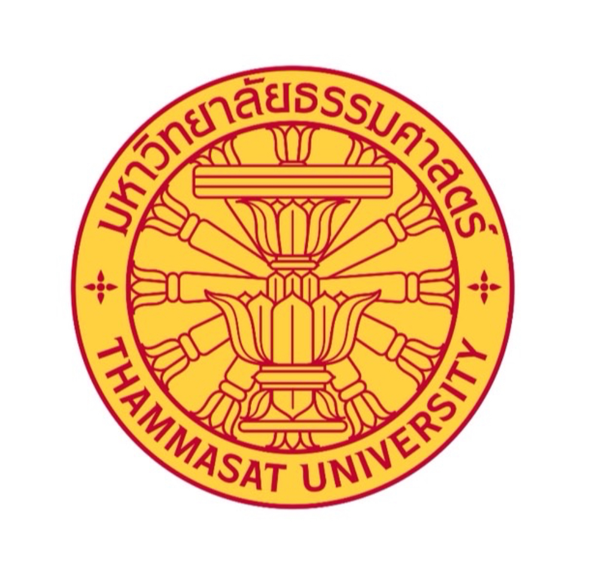
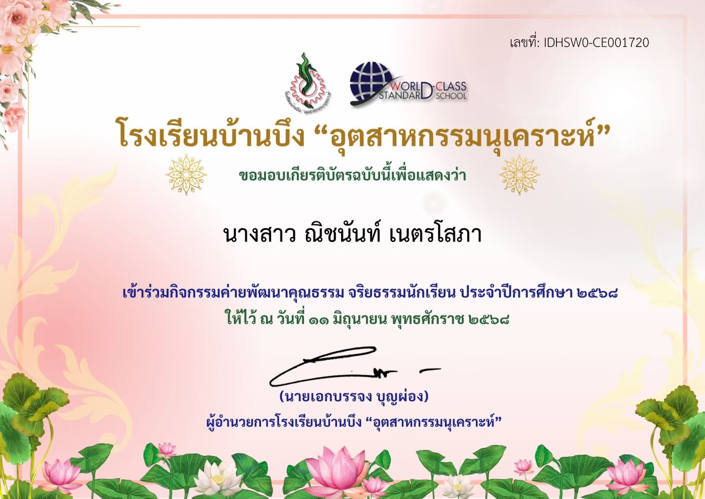

กิจกรรมที่เข้าร่วม
กิจกรรมที่ 1: ผ่านเข้ารอบชิงชนะเลิศ การแข่งขันตอบปัญหากฎหมาย (พ.ศ. 2568)

ค้นคว้าและวิเคราะห์ข้อกฎหมายเพื่อตอบคำถามแข่งขัน ได้ความรู้ทางกฎหมาย ฝึกการคิดอย่างเป็นระบบ และได้ฝึกแก้ปัญหาใต้ความกดดัน
กิจกรรมที่ 2: เข้าร่วมการแข่งขันตอบปัญหาเชิงวิชาการเกี่ยวกับวุฒิสภาและการเมืองการปกครอง

อ่านและทบทวนความรู้เกี่ยวกับระบบการเมืองและการทำงานของวุฒิสภา ได้เข้าใจการปกครองของไทยมากขึ้น และได้ฝึกไหวพริบการตอบคำถามหน้างาน
กิจกรรมที่ 3: เข้าร่วมการแข่งขันประกวดคำขวัญต่อต้านการทุจริต ระดับมัธยมศึกษาตอนปลาย

คิดแต่งคำขวัญเพื่อรณรงค์เรื่องความซื่อสัตย์ ได้ฝึกการสรุปความคิดและเลือกใช้คำภาษาไทยให้กระชับน่าสนใจ พร้อมปลูกฝังเรื่องคุณธรรม
กิจกรรมที่ 4: โครงการทริป "หัวใจอาสาฟื้นฟูป่าชายเลน" ณ สวนป่าชายเลน สอ.รฝ. สัตหีบ

ลงพื้นที่ปลูกต้นไม้และช่วยฟื้นฟูธรรมชาติชายฝั่ง ได้ช่วยส่วนรวม ฝึกความอดทนในการทำงานกลางแจ้ง และเรียนรู้การทำงานร่วมกับเพื่อนๆ
กิจกรรมที่ 5: ฝึกประสบการณ์วิชาชีพ ณ กลุ่มงานการพยาบาล โรงพยาบาลบ้านบึง

เข้าเรียนรู้การทำงานของพี่ๆ พยาบาลและช่วยงานทั่วไปในโรงพยาบาล ได้เห็นการทำงานจริงในสายสุขภาพ ฝึกการสื่อสาร และเข้าใจการดูแลผู้ป่วยมากขึ้น
กิจกรรมที่ 6: นักเรียนจิตอาสาและสตาฟงานเปิดบ้านวิชาการ "BBU JOB FAIR" (เกม KenKen)

ประจำฐานกิจกรรม คอยอธิบายกติกาและสอนวิธีเล่นเกมคณิตศาสตร์ให้ผู้เข้าร่วมงาน ได้ฝึกการพูดอธิบายเรื่องยากๆ ให้คนอื่นเข้าใจง่าย และได้ทำงานบริการด้วยจิตอาสา
กิจกรรมที่ 7: วิทยากรจัดแสดงนิทรรศการวิทยาศาสตร์และเทคโนโลยี งานวันวิทยาศาสตร์แห่งชาติ (ปีการศึกษา 2569)

จัดเตรียมฐานเรียนรู้และเป็นคนพูดบรรยายความรู้วิทยาศาสตร์ให้ผู้เข้าชมฟัง ได้ฝึกกล้าแสดงออก การพูดต่อหน้าคนเยอะๆ และได้ทบทวนความรู้วิทยาศาสตร์ไปในตัว
กิจกรรมที่ 8: เข้าร่วมกิจกรรมค่ายพัฒนาคุณธรรม จริยธรรมนักเรียน ประจำปีการศึกษา 2568

เข้าร่วมกิจกรรมอบรมและฝึกปฏิบัติเพื่อส่งเสริมศีลธรรม ได้เรียนรู้การอยู่ร่วมกับผู้อื่น การฝึกสมาธิ จิตสำนึกความรับผิดชอบ และการนำหลักธรรมมาปรับใช้ในชีวิตประจำวัน
กิจกรรมที่ 9: ผ่านการอบรมเชิงปฏิบัติการ โครงการวัยรุ่นยุคใหม่ ปลอดภัยทุกเส้นทาง ประจำปีงบประมาณ 2569

เข้าร่วมอบรมและฝึกภาคปฏิบัติเกี่ยวกับวินัยจราจรและการขับขี่อย่างปลอดภัย ได้ความเข้าใจในกฎจราจร ตระหนักถึงความปลอดภัยบนท้องถนน และลดความเสี่ยงจากการเกิดอุบัติเหตุ